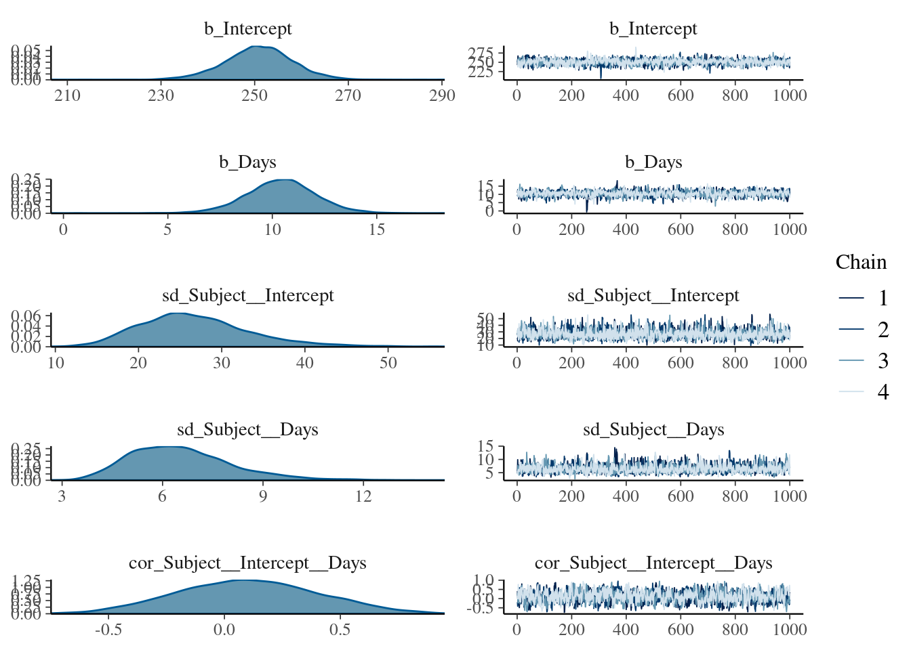
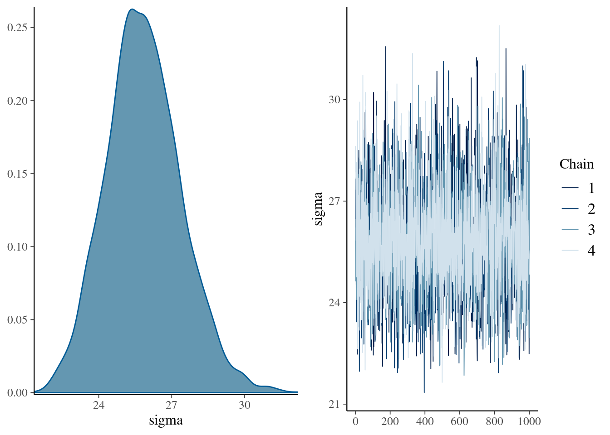
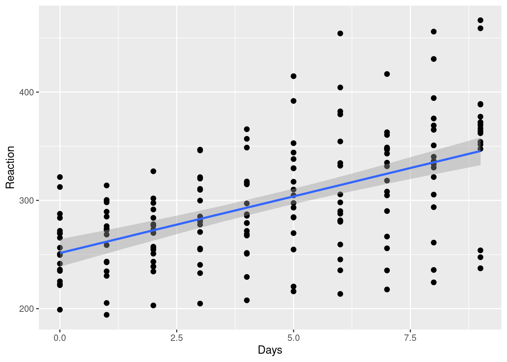
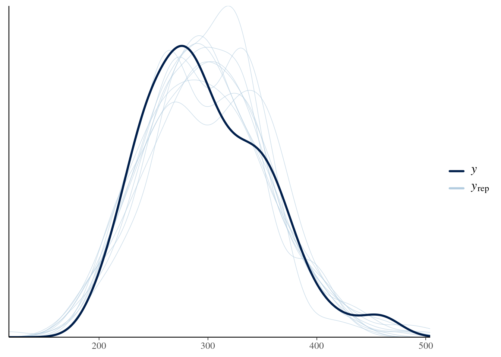
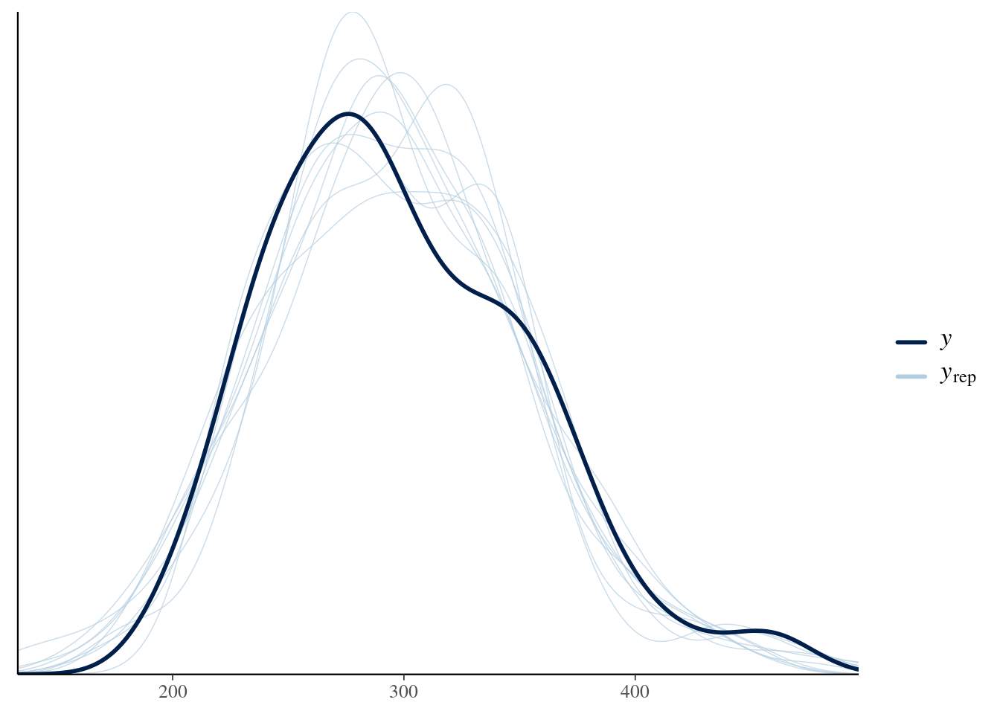
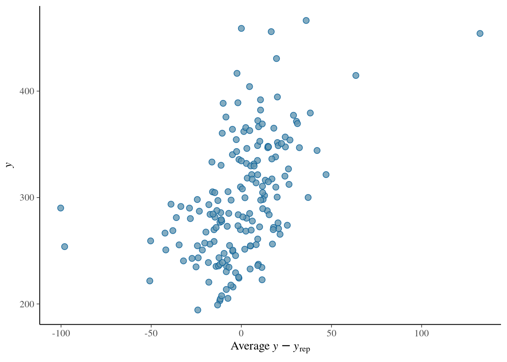
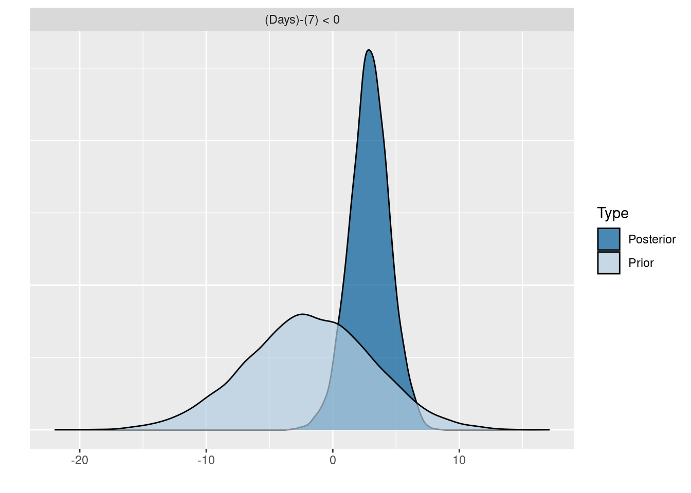

Bayesian Analysis
Adapted from brms workshop by Paul-Christian Bürkner
1 Preamble
1.1 Install Libraries
#install.packages("remotes")
#remotes::install_git("https://research-git.uiowa.edu/PetersenLab/petersenlab.git")1.2 Load Libraries
library("lme4")
library("rstan")
library("brms")1.3 Load Data
data("sleepstudy", package = "lme4")1.4 Prepare Data
conditions <- make_conditions(sleepstudy, "Subject")2 brms
2.1 Post-Processing Methods
methods(class = "brmsfit") [1] add_criterion add_ic as_draws_array
[4] as_draws_df as_draws_list as_draws_matrix
[7] as_draws_rvars as_draws as.array
[10] as.data.frame as.matrix as.mcmc
[13] autocor bayes_factor bayes_R2
[16] bridge_sampler coef conditional_effects
[19] conditional_smooths control_params expose_functions
[22] family fitted fixef
[25] formula getCall hypothesis
[28] kfold launch_shinystan log_lik
[31] log_posterior logLik loo_compare
[34] loo_linpred loo_model_weights loo_moment_match
[37] loo_predict loo_predictive_interval loo_R2
[40] loo_subsample loo LOO
[43] marginal_effects marginal_smooths mcmc_plot
[46] model_weights model.frame nchains
[49] ndraws neff_ratio ngrps
[52] niterations nobs nsamples
[55] nuts_params nvariables pairs
[58] parnames plot post_prob
[61] posterior_average posterior_epred posterior_interval
[64] posterior_linpred posterior_predict posterior_samples
[67] posterior_smooths posterior_summary pp_average
[70] pp_check pp_mixture predict
[73] predictive_error predictive_interval prepare_predictions
[76] print prior_draws prior_summary
[79] ranef reloo residuals
[82] rhat stancode standata
[85] stanplot summary update
[88] VarCorr variables vcov
[91] waic WAIC
see '?methods' for accessing help and source code3 Multilevel Models
3.1 Fit the Models
3.1.1 Complete Pooling
fit_sleep1 <- brm(Reaction ~ 1 + Days, data = sleepstudy)Compiling Stan program...Start sampling3.1.2 Random Intercepts
fit_sleep2 <- brm(Reaction ~ 1 + Days + (1 | Subject),
data = sleepstudy)Compiling Stan program...Start sampling3.1.3 Random Intercepts and Slopes
fit_sleep3 <- brm(
Reaction ~ 1 + Days + (1 + Days | Subject),
data = sleepstudy
)Compiling Stan program...Start sampling3.2 Summarize Results
For convergence, Rhat values should not be above
1.00.
summary(fit_sleep3) Family: gaussian
Links: mu = identity; sigma = identity
Formula: Reaction ~ 1 + Days + (1 + Days | Subject)
Data: sleepstudy (Number of observations: 180)
Draws: 4 chains, each with iter = 2000; warmup = 1000; thin = 1;
total post-warmup draws = 4000
Group-Level Effects:
~Subject (Number of levels: 18)
Estimate Est.Error l-95% CI u-95% CI Rhat Bulk_ESS Tail_ESS
sd(Intercept) 27.13 6.83 15.87 42.24 1.00 1829 2466
sd(Days) 6.53 1.53 4.09 10.07 1.00 1404 2386
cor(Intercept,Days) 0.08 0.29 -0.46 0.65 1.01 878 1784
Population-Level Effects:
Estimate Est.Error l-95% CI u-95% CI Rhat Bulk_ESS Tail_ESS
Intercept 251.44 7.31 236.66 266.05 1.00 1798 2508
Days 10.44 1.65 7.22 13.67 1.00 1551 2100
Family Specific Parameters:
Estimate Est.Error l-95% CI u-95% CI Rhat Bulk_ESS Tail_ESS
sigma 25.89 1.52 23.09 29.12 1.00 3422 3193
Draws were sampled using sampling(NUTS). For each parameter, Bulk_ESS
and Tail_ESS are effective sample size measures, and Rhat is the potential
scale reduction factor on split chains (at convergence, Rhat = 1).3.3 Model Priors
prior_summary(fit_sleep3)3.4 Model Coefficients
coef(fit_sleep3)$Subject
, , Intercept
Estimate Est.Error Q2.5 Q97.5
308 253.8941 13.29957 228.2168 279.7090
309 211.3298 13.26406 185.0203 236.5479
310 212.9279 13.34390 185.5148 238.6616
330 274.7361 13.18647 249.6089 301.9072
331 273.3196 12.76099 249.4482 299.0815
332 260.0995 12.63663 235.6159 285.2664
333 267.8937 12.17319 244.8862 292.6868
334 244.2913 12.11859 219.5184 267.8098
335 251.0818 13.38143 224.7039 277.4586
337 286.2139 13.36442 259.7922 312.2710
349 226.3474 13.07986 200.9485 250.9990
350 238.6737 13.06618 212.5952 263.4989
351 255.8189 12.41810 231.8408 280.2549
352 272.2898 12.32241 248.3678 296.1587
369 254.5762 12.29463 230.1322 278.4912
370 226.2481 13.15365 200.5148 251.7682
371 252.1368 12.13743 228.3169 275.9023
372 263.6279 12.31807 240.1810 288.3141
, , Days
Estimate Est.Error Q2.5 Q97.5
308 19.6597032 2.525596 14.86785312 24.578089
309 1.7600245 2.510466 -3.24782711 6.732902
310 4.9211206 2.523996 0.02552311 9.982894
330 5.7026098 2.463940 0.83013945 10.493558
331 7.4576249 2.452036 2.53740905 12.180699
332 10.2042028 2.336157 5.45918291 14.734267
333 10.2594184 2.360445 5.53610438 14.951425
334 11.4951892 2.307320 6.87476871 16.108658
335 -0.3066714 2.528408 -5.20619251 4.531006
337 19.1592325 2.499297 14.39233909 24.189160
349 11.6338029 2.443482 6.95399335 16.436535
350 17.0513236 2.484324 12.28028402 22.074006
351 7.4965708 2.375177 2.80222738 12.052308
352 14.0156605 2.357857 9.42483103 18.658281
369 11.3185038 2.336301 6.75886358 15.868828
370 15.2239426 2.530012 10.27766667 20.334107
371 9.4937618 2.335555 5.00238760 14.129432
372 11.7702371 2.316950 7.16019533 16.2533003.5 Plots
3.5.1 Trace Plots
plot(fit_sleep3, ask = FALSE)
3.5.2 Visualize Predictions
3.5.2.1 Sample-Level
plot(conditional_effects(fit_sleep1), points = TRUE)
3.5.2.2 Person-Level
# re_formula = NULL ensures that group-level effects are included
ce2 <- conditional_effects(fit_sleep3, conditions = conditions,
re_formula = NULL)
plot(ce2, ncol = 6, points = TRUE)
3.5.3 Check Model Fit
3.5.3.1 Posterior Predictive Check
Evaluate how closely the posterior predictions match the observed values. If they do not match the general pattern of the observed values, a different response distribution may be necessary.
pp_check(fit_sleep3)Using 10 posterior draws for ppc type 'dens_overlay' by default.
pp_check(fit_sleep3, type = "dens_overlay")Using 10 posterior draws for ppc type 'dens_overlay' by default.
pp_check(fit_sleep3, "error_scatter_avg")Using all posterior draws for ppc type 'error_scatter_avg' by default.
3.6 Fitted Values
fitted(fit_sleep3) Estimate Est.Error Q2.5 Q97.5
[1,] 253.8941 13.299566 228.2168 279.7090
[2,] 273.5538 11.361873 251.7124 295.5408
[3,] 293.2135 9.698613 274.2836 311.7375
[4,] 312.8732 8.472976 296.4123 329.1242
[5,] 332.5329 7.891565 316.5869 347.8354
[6,] 352.1926 8.094415 336.0373 367.6820
[7,] 371.8523 9.028819 353.9549 389.4952
[8,] 391.5120 10.501279 370.8561 412.1703
[9,] 411.1717 12.320365 387.1833 435.1306
[10,] 430.8314 14.354902 402.9263 459.2491
[11,] 211.3298 13.264062 185.0203 236.5479
[12,] 213.0898 11.350289 190.7152 234.9737
[13,] 214.8499 9.712244 195.9306 233.8224
[14,] 216.6099 8.510650 200.1760 233.4706
[15,] 218.3699 7.946039 203.0133 233.8138
[16,] 220.1299 8.151858 204.2106 235.8324
[17,] 221.8900 9.075842 204.2853 239.2473
[18,] 223.6500 10.530617 202.8663 243.8859
[19,] 225.4100 12.329711 200.8460 248.9054
[20,] 227.1700 14.344146 199.0798 254.5608
[21,] 212.9279 13.343899 185.5148 238.6616
[22,] 217.8490 11.413639 194.4047 239.8310
[23,] 222.7701 9.758268 203.2235 241.5170
[24,] 227.6912 8.539178 210.7224 244.3660
[25,] 232.6124 7.959424 216.9720 248.3293
[26,] 237.5335 8.156496 221.7337 253.4983
[27,] 242.4546 9.079952 224.8897 260.1385
[28,] 247.3757 10.540577 226.6489 268.2085
[29,] 252.2969 12.349214 228.1089 277.3040
[30,] 257.2180 14.375102 228.7664 286.4490
[31,] 274.7361 13.186469 249.6089 301.9072
[32,] 280.4387 11.319925 258.5109 303.4041
[33,] 286.1413 9.723191 266.8516 305.3797
[34,] 291.8439 8.548812 275.1515 308.6825
[35,] 297.5465 7.985358 281.7316 313.3147
[36,] 303.2492 8.160373 287.0015 319.1712
[37,] 308.9518 9.031027 291.0546 326.6754
[38,] 314.6544 10.424453 294.2292 334.7752
[39,] 320.3570 12.162277 296.4603 343.9651
[40,] 326.0596 14.117888 298.1725 353.4297
[41,] 273.3196 12.760986 249.4482 299.0815
[42,] 280.7772 10.931547 259.9551 302.8060
[43,] 288.2348 9.390401 270.2354 306.8554
[44,] 295.6925 8.299729 279.4911 311.7106
[45,] 303.1501 7.849607 287.2883 318.5661
[46,] 310.6077 8.146908 294.4111 326.6358
[47,] 318.0653 9.118818 300.1754 335.6669
[48,] 325.5230 10.581046 304.3874 346.0893
[49,] 332.9806 12.360792 309.1855 357.3085
[50,] 340.4382 14.340321 313.1348 368.3722
[51,] 260.0995 12.636635 235.6159 285.2664
[52,] 270.3037 10.913575 248.8789 292.0013
[53,] 280.5079 9.457430 261.6818 299.3553
[54,] 290.7121 8.408036 274.2024 307.5711
[55,] 300.9163 7.928583 285.3198 316.5775
[56,] 311.1205 8.120655 295.0050 327.1142
[57,] 321.3247 8.941080 303.6429 339.2281
[58,] 331.5289 10.239924 311.5280 352.0088
[59,] 341.7331 11.861047 318.4466 365.4514
[60,] 351.9373 13.690437 324.8453 379.3403
[61,] 267.8937 12.173185 244.8862 292.6868
[62,] 278.1531 10.473622 258.2435 299.0540
[63,] 288.4126 9.074716 271.0890 306.3115
[64,] 298.6720 8.133117 283.0096 314.7767
[65,] 308.9314 7.815889 293.8684 324.5707
[66,] 319.1908 8.195856 303.3039 335.3942
[67,] 329.4502 9.186914 311.4260 347.8405
[68,] 339.7097 10.619328 318.8287 361.5449
[69,] 349.9691 12.340351 325.7127 375.5151
[70,] 360.2285 14.245765 332.5162 389.6781
[71,] 244.2913 12.118589 219.5184 267.8098
[72,] 255.7865 10.425411 234.8039 275.7592
[73,] 267.2817 9.009198 249.4430 284.7839
[74,] 278.7769 8.018077 263.1118 294.3538
[75,] 290.2721 7.619772 275.4665 305.1302
[76,] 301.7673 7.904413 285.8704 317.0421
[77,] 313.2625 8.806021 295.9378 330.3426
[78,] 324.7576 10.161680 304.9135 344.7345
[79,] 336.2528 11.816129 313.2513 359.0208
[80,] 347.7480 13.661242 320.9608 374.3052
[81,] 251.0818 13.381434 224.7039 277.4586
[82,] 250.7752 11.430874 228.1388 273.5704
[83,] 250.4685 9.749495 231.4547 269.9389
[84,] 250.1618 8.498595 233.3581 267.0495
[85,] 249.8552 7.885765 234.3581 265.5456
[86,] 249.5485 8.057924 234.0042 265.6638
[87,] 249.2418 8.969988 232.1448 266.5802
[88,] 248.9351 10.429617 229.0106 269.5142
[89,] 248.6285 12.242501 224.8635 272.7583
[90,] 248.3218 14.274679 220.6935 276.2393
[91,] 286.2139 13.364415 259.7922 312.2710
[92,] 305.3731 11.469397 282.9291 328.0816
[93,] 324.5323 9.847818 305.2530 343.9261
[94,] 343.6916 8.654764 326.8853 360.8871
[95,] 362.8508 8.082285 347.0015 378.6530
[96,] 382.0100 8.260429 365.7159 398.2757
[97,] 401.1693 9.145437 383.2130 419.2569
[98,] 420.3285 10.561076 400.0350 441.9753
[99,] 439.4877 12.325851 415.9970 464.9348
[100,] 458.6470 14.311179 431.3555 487.5890
[101,] 226.3474 13.079863 200.9485 250.9990
[102,] 237.9812 11.276141 215.9489 259.7296
[103,] 249.6150 9.755055 230.2490 268.5456
[104,] 261.2488 8.666720 244.2658 277.6559
[105,] 272.8826 8.185608 256.6818 288.5387
[106,] 284.5164 8.416504 268.0132 300.4182
[107,] 296.1502 9.306562 277.9510 313.8018
[108,] 307.7840 10.692421 286.8911 327.9494
[109,] 319.4178 12.409062 295.1392 343.2623
[110,] 331.0516 14.338166 302.8362 358.3173
[111,] 238.6737 13.066179 212.5952 263.4989
[112,] 255.7250 11.178370 233.3363 277.0584
[113,] 272.7763 9.567163 253.3367 291.3156
[114,] 289.8276 8.393389 273.0751 306.3704
[115,] 306.8790 7.855641 291.5371 322.4170
[116,] 323.9303 8.081890 308.4062 339.8986
[117,] 340.9816 9.014794 323.6237 358.6415
[118,] 358.0329 10.467083 337.5408 379.0276
[119,] 375.0843 12.255483 350.9058 398.9821
[120,] 392.1356 14.254039 363.7134 419.8950
[121,] 255.8189 12.418096 231.8408 280.2549
[122,] 263.3155 10.684439 242.4329 284.3996
[123,] 270.8120 9.240579 252.5722 289.1588
[124,] 278.3086 8.240284 261.8279 294.6083
[125,] 285.8052 7.854884 269.9120 300.8137
[126,] 293.3018 8.171844 276.8896 309.0704
[127,] 300.7983 9.118213 282.7546 318.8617
[128,] 308.2949 10.525564 287.5465 329.3073
[129,] 315.7915 12.235854 291.7704 339.7819
[130,] 323.2880 14.139578 295.8579 350.4615
[131,] 272.2898 12.322408 248.3678 296.1587
[132,] 286.3055 10.605194 265.8473 306.9180
[133,] 300.3211 9.177011 282.7514 317.9321
[134,] 314.3368 8.190475 298.5363 330.1574
[135,] 328.3524 7.814680 312.9781 343.7148
[136,] 342.3681 8.134713 326.5163 358.2793
[137,] 356.3838 9.077271 338.7631 374.0747
[138,] 370.3994 10.475645 349.9641 391.0376
[139,] 384.4151 12.173758 360.8989 408.5413
[140,] 398.4307 14.063450 371.6659 426.2788
[141,] 254.5762 12.294630 230.1322 278.4912
[142,] 265.8947 10.604578 245.0431 286.0884
[143,] 277.2132 9.201785 259.0136 294.8289
[144,] 288.5317 8.234392 272.0061 304.4420
[145,] 299.8502 7.864744 284.2135 314.9991
[146,] 311.1687 8.174336 295.0028 327.1358
[147,] 322.4872 9.094062 305.0507 340.2454
[148,] 333.8057 10.464262 314.0333 354.2630
[149,] 345.1242 12.133267 321.6863 369.2795
[150,] 356.4427 13.994577 329.1609 384.0134
[151,] 226.2481 13.153652 200.5148 251.7682
[152,] 241.4721 11.229278 219.4445 263.5326
[153,] 256.6960 9.590450 237.9928 275.6864
[154,] 271.9200 8.405872 255.4341 288.7232
[155,] 287.1439 7.883056 271.6085 302.5472
[156,] 302.3678 8.150361 286.3426 318.3962
[157,] 317.5918 9.138716 299.7980 335.3541
[158,] 332.8157 10.649215 311.9748 354.0876
[159,] 348.0397 12.493893 323.7138 373.3299
[160,] 363.2636 14.546163 334.9809 392.7947
[161,] 252.1368 12.137432 228.3169 275.9023
[162,] 261.6306 10.441583 240.9630 282.4491
[163,] 271.1243 9.035801 253.2830 289.0889
[164,] 280.6181 8.073066 264.5574 296.2995
[165,] 290.1119 7.720926 274.7343 304.7684
[166,] 299.6056 8.059817 283.6673 315.7211
[167,] 309.0994 9.012116 291.1898 327.2846
[168,] 318.5931 10.410833 298.1810 339.5517
[169,] 328.0869 12.102161 303.8506 352.1310
[170,] 337.5807 13.980300 309.7281 365.1113
[171,] 263.6279 12.318075 240.1810 288.3141
[172,] 275.3982 10.659706 254.9443 296.6334
[173,] 287.1684 9.287637 269.2362 305.4607
[174,] 298.9387 8.344315 282.5564 315.0428
[175,] 310.7089 7.983200 295.0563 326.4087
[176,] 322.4791 8.280815 306.2366 338.4864
[177,] 334.2494 9.173267 316.0075 352.1170
[178,] 346.0196 10.510103 325.4807 366.8789
[179,] 357.7898 12.145461 333.9160 381.8543
[180,] 369.5601 13.974930 342.0084 397.29333.7 Residuals
residuals(fit_sleep3) Estimate Est.Error Q2.5 Q97.5
[1,] -4.3341204 13.299566 -30.14900613 21.3432161
[2,] -14.8491235 11.361873 -36.83606213 6.9922901
[3,] -42.4129267 9.698613 -60.93692984 -23.4830058
[4,] 8.5665701 8.472976 -7.68436816 25.0275403
[5,] 24.3189669 7.891565 9.01652485 40.2650138
[6,] 62.4974637 8.094415 47.00807669 78.6527598
[7,] 10.3514606 9.028819 -7.29144140 28.2488599
[8,] -101.3634426 10.501279 -122.02168928 -80.7075332
[9,] 19.4135542 12.320365 -4.54531936 43.4020013
[10,] 35.5220510 14.354902 7.10441525 63.4271834
[11,] 11.4040752 13.264062 -13.81397363 37.7135868
[12,] -7.8240493 11.350289 -29.70794001 14.5506350
[13,] -11.8720739 9.712244 -30.84464415 7.0471931
[14,] -11.9028984 8.510650 -28.76358645 4.5309891
[15,] -10.6538230 7.946039 -26.09765654 4.7028075
[16,] -4.1681475 8.151858 -19.87058343 11.7511719
[17,] -8.2596721 9.075842 -25.61697944 9.3449553
[18,] -5.9227966 10.530617 -26.15872319 14.8609011
[19,] -1.1143212 12.329711 -24.60967134 23.4497243
[20,] 10.1441543 14.344146 -17.24660415 38.2344044
[21,] -13.8739858 13.343899 -39.60765230 13.5391339
[22,] -23.5168064 11.413639 -45.49882754 -0.0725014
[23,] 11.5498731 9.758268 -7.19704441 31.0965380
[24,] 5.1503525 8.539178 -11.52442322 22.1192133
[25,] -3.3049680 7.959424 -19.02192777 12.3353637
[26,] -17.0755886 8.156496 -33.04038594 -1.2757660
[27,] -7.0338092 9.079952 -24.71766392 10.5310554
[28,] 8.3753703 10.540577 -12.45740115 29.1021936
[29,] 8.7156497 12.349214 -16.29151962 32.9035999
[30,] -9.7026708 14.375102 -38.93365907 18.7489044
[31,] 46.8064966 13.186469 19.63537361 71.9337497
[32,] 19.9614868 11.319925 -3.00390961 41.8893330
[33,] -2.2848230 9.723191 -21.52318887 17.0049211
[34,] -6.7109329 8.548812 -23.54945417 9.9814526
[35,] -11.7492427 7.985358 -27.51740484 4.0656632
[36,] -5.6636526 8.160373 -21.58567260 10.5839859
[37,] -28.7121624 9.031027 -46.43584990 -10.8150078
[38,] 3.6069278 10.424453 -16.51388202 24.0321063
[39,] -15.0074821 12.162277 -38.61557792 8.8891901
[40,] 27.9891081 14.117888 0.61902477 55.8762123
[41,] 14.2883087 12.760986 -11.47359626 38.1596991
[42,] 4.2227838 10.931547 -17.80603254 25.0449483
[43,] 13.5857589 9.390401 -5.03480223 31.5851929
[44,] 24.4228339 8.299729 8.40465377 40.6242490
[45,] 13.1272090 7.849607 -2.28884299 28.9890495
[46,] -17.2890159 8.146908 -33.31711320 -1.0924415
[47,] -27.9903409 9.118818 -45.59187678 -10.1004083
[48,] 9.2947342 10.581046 -11.27161347 30.4303353
[49,] -39.2336907 12.360792 -63.56157046 -15.4386151
[50,] 31.1428844 14.340321 3.20894993 58.4462731
[51,] -25.2389202 12.636635 -50.40581522 -0.7553390
[52,] -27.4919229 10.913575 -49.18953617 -6.0670998
[53,] -7.5466257 9.457430 -26.39398748 11.2795130
[54,] 19.0566716 8.408036 2.19766715 35.5663604
[55,] 16.5465688 7.928583 0.88537256 32.1430904
[56,] -1.1229339 8.120655 -17.11658945 14.9925859
[57,] 132.8371633 8.941080 114.93384243 150.5189780
[58,] 15.3021606 10.239924 -5.17767668 35.3030997
[59,] -11.4328422 11.861047 -35.15112309 11.8536942
[60,] -98.0729450 13.690437 -125.47594202 -70.9808691
[61,] 15.9486729 12.173185 -8.84441555 38.9561644
[62,] 11.4018545 10.473622 -9.49899285 31.3115334
[63,] -11.6432638 9.074716 -29.54223523 5.6803351
[64,] 1.1377178 8.133117 -14.96698777 16.8001233
[65,] -11.7604005 7.815889 -27.39968353 3.3026157
[66,] 18.9756811 8.195856 2.77227037 34.8625817
[67,] 2.5762628 9.186914 -15.81404908 20.6004880
[68,] 9.1302444 10.619328 -12.70497605 30.0111953
[69,] -16.6090739 12.340351 -42.15505254 7.6472719
[70,] 1.8143077 14.245765 -27.63532231 29.5265795
[71,] 21.1817814 12.118589 -2.33673749 45.9547031
[72,] 20.4146922 10.425411 0.44200603 41.3972583
[73,] -23.9169970 9.009198 -41.41918708 -6.0783091
[74,] -24.1045862 8.018077 -39.68152902 -8.4394746
[75,] -11.2476754 7.619772 -26.10575248 3.5579281
[76,] -17.5760645 7.904413 -32.85085152 -1.6791957
[77,] -7.7376537 8.806021 -24.81784937 9.5869518
[78,] 6.7652571 10.161680 -13.21162179 26.6093560
[79,] -0.5059321 11.816129 -23.27391846 22.4956242
[80,] 29.5509787 13.661242 2.99379190 56.3382236
[81,] -9.4735438 13.381434 -35.85025937 16.9043957
[82,] 23.1720277 11.430874 0.37675374 45.8083719
[83,] 4.0221991 9.749495 -15.44822875 23.0359832
[84,] 20.6402705 8.498595 3.75257694 37.4440150
[85,] 1.5967419 7.885765 -14.09373201 17.0937523
[86,] 5.0877133 8.057924 -11.02764544 20.6320376
[87,] -3.7895152 8.969988 -21.12786487 13.3075413
[88,] -13.6241438 10.429617 -34.20317865 6.3003921
[89,] -12.8743724 12.242501 -37.00415036 10.8906124
[90,] -11.0752010 14.274679 -38.99268587 16.5530769
[91,] 26.1527250 13.364415 0.09555956 52.5743956
[92,] 8.4326925 11.469397 -14.27579597 30.8766545
[93,] -32.9211401 9.847818 -52.31491603 -13.6417977
[94,] 2.4306274 8.654764 -14.76489903 19.2368864
[95,] 2.8815948 8.082285 -12.92061541 18.7308836
[96,] 9.8284623 8.260429 -6.43721167 26.1226401
[97,] 3.0908297 9.145437 -14.99684742 21.0471218
[98,] -3.6362028 10.561076 -25.28296768 16.6572606
[99,] 16.3765647 12.325851 -9.07046022 39.8673443
[100,] 0.2697321 14.311179 -28.67226269 27.5611956
[101,] 9.7557761 13.079863 -14.89581202 35.1547320
[102,] -7.6645268 11.276141 -29.41291025 14.3677797
[103,] -10.6894297 9.755055 -29.61997589 8.6766120
[104,] -6.3268325 8.666720 -22.73394626 10.6562293
[105,] -22.1723354 8.185608 -37.82842615 -5.9715026
[106,] -14.7420383 8.416504 -30.64382574 1.7611517
[107,] -14.5854412 9.306562 -32.23696413 3.6138452
[108,] 0.3179559 10.692421 -19.84735378 21.2109020
[109,] 16.8627530 12.409062 -6.98173601 41.1413717
[110,] 20.5934502 14.338166 -6.67220365 48.8089228
[111,] 17.6231375 13.066179 -7.20212306 43.7016197
[112,] -12.2706862 11.178370 -33.60405950 10.1179532
[113,] -16.5717098 9.567163 -35.11103839 2.8679084
[114,] -34.3005334 8.393389 -50.84328648 -17.5480211
[115,] -37.9624571 7.855641 -53.50054331 -22.6206463
[116,] 5.7944193 8.081890 -10.17392688 21.3184666
[117,] 38.4628956 9.014794 20.80300301 55.8208350
[118,] 4.8854720 10.467083 -16.10918845 25.3776029
[119,] 19.4029484 12.255483 -4.49489032 43.5813557
[120,] -3.0828753 14.254039 -30.84225545 25.3392781
[121,] -5.2924028 12.418096 -29.72842060 18.6856756
[122,] 36.7421264 10.684439 15.65800659 57.6246645
[123,] -0.9181444 9.240579 -19.26494445 17.3216989
[124,] 2.2804848 8.240284 -14.01919624 18.7612154
[125,] -13.9777860 7.854884 -28.98626712 1.9153593
[126,] 11.3318432 8.171844 -4.43682788 27.7439731
[127,] -13.0517276 9.118213 -31.11510376 4.9919925
[128,] -41.6993984 10.525564 -62.71184531 -20.9510288
[129,] 5.7503308 12.235854 -18.24013322 29.7713683
[130,] 24.2774600 14.139578 -2.89599543 51.7076334
[131,] -50.6127049 12.322408 -74.48161086 -26.6907422
[132,] 11.8884346 10.605194 -8.72409579 32.3466420
[133,] 26.5573741 9.177011 8.94644305 44.1271448
[134,] 32.5187137 8.190475 16.69805629 48.3191555
[135,] 20.3877532 7.814680 5.02539089 35.7621291
[136,] 10.4605927 8.134713 -5.45062746 26.3123823
[137,] -1.9571678 9.077271 -19.64812783 15.6634833
[138,] -9.9668283 10.475645 -30.60499095 10.4685436
[139,] -8.7744887 12.173758 -32.90071815 14.7417068
[140,] -9.8890492 14.063450 -37.73709933 16.8757825
[141,] 17.3472873 12.294630 -6.56768961 41.7913263
[142,] 2.5421835 10.604578 -17.65148979 23.3937947
[143,] -19.9708203 9.201785 -37.58647640 -1.7712115
[144,] -10.8751241 8.234392 -26.78540654 5.6504859
[145,] 14.9719721 7.864744 -0.17692643 30.6086666
[146,] 6.0447683 8.174336 -9.92227871 22.2106974
[147,] -24.3519355 9.094062 -42.11006213 -6.9153898
[148,] 14.3171607 10.464262 -6.14006962 34.0895798
[149,] -4.8442431 12.133267 -28.99954236 18.5936582
[150,] 10.0703531 13.994577 -17.50025180 37.3522266
[151,] -0.9841281 13.153652 -26.50418275 24.7492397
[152,] -6.9485707 11.229278 -29.00908603 15.0790142
[153,] -17.7952133 9.590450 -36.78557981 0.9080424
[154,] -31.4469559 8.405872 -48.25019874 -14.9610678
[155,] -19.6065986 7.883056 -35.00992696 -4.0712349
[156,] 41.8258588 8.150361 25.79751123 57.8511162
[157,] -36.4436838 9.138716 -54.20595802 -18.6499196
[158,] 14.7697736 10.649215 -6.50207674 35.6107390
[159,] 17.1233310 12.493893 -8.16689575 41.4491736
[160,] 8.9651884 14.546163 -20.56594090 37.2478818
[161,] 17.7435848 12.137432 -6.02188874 41.5634519
[162,] 10.8122230 10.441583 -10.00628668 31.4798416
[163,] 6.7745612 9.035801 -11.19001602 24.6159383
[164,] 1.1713995 8.073066 -14.51001312 17.2321222
[165,] -10.9413623 7.720926 -25.59793065 4.4362078
[166,] -15.0936240 8.059817 -31.20913682 0.8446825
[167,] -49.8335858 9.012116 -68.01882692 -31.9240148
[168,] -13.9625476 10.410833 -34.92112222 6.4495803
[169,] 22.6937907 12.102161 -1.35025943 46.9300949
[170,] 31.8885289 13.980300 4.35793910 59.7411298
[171,] 5.7837611 12.318075 -18.90238163 29.2307214
[172,] -1.9241761 10.659706 -23.15935896 18.5297197
[173,] 10.4283868 9.287637 -7.86389830 28.3606334
[174,] 11.6929496 8.344315 -4.41121335 28.0752100
[175,] -23.5362875 7.983200 -39.23606985 -7.8836575
[176,] 7.1284754 8.280815 -8.87884276 23.3710271
[177,] 0.2324382 9.173267 -17.63518149 18.4742921
[178,] -2.7996989 10.510103 -23.65901636 17.7391694
[179,] 11.3518639 12.145461 -12.71257391 35.2257349
[180,] -5.4364732 13.974930 -33.16965908 22.11516193.8 Compare Models
elpd values: higher is better looic values:
lower is better
elpd_diff values that are greater than ~2 standard
errors of the elpd_diff values indicate a significantly
better model (i.e., if elpd_diff value is greater than 2
times the se_diff value).
loo(fit_sleep1, fit_sleep2, fit_sleep3)Warning: Found 3 observations with a pareto_k > 0.7 in model 'fit_sleep3'. It is
recommended to set 'moment_match = TRUE' in order to perform moment matching for
problematic observations.Output of model 'fit_sleep1':
Computed from 4000 by 180 log-likelihood matrix
Estimate SE
elpd_loo -953.3 10.5
p_loo 3.2 0.5
looic 1906.5 21.0
------
Monte Carlo SE of elpd_loo is 0.0.
All Pareto k estimates are good (k < 0.5).
See help('pareto-k-diagnostic') for details.
Output of model 'fit_sleep2':
Computed from 4000 by 180 log-likelihood matrix
Estimate SE
elpd_loo -884.9 14.2
p_loo 19.2 3.2
looic 1769.7 28.4
------
Monte Carlo SE of elpd_loo is 0.1.
All Pareto k estimates are good (k < 0.5).
See help('pareto-k-diagnostic') for details.
Output of model 'fit_sleep3':
Computed from 4000 by 180 log-likelihood matrix
Estimate SE
elpd_loo -860.7 22.5
p_loo 33.7 8.4
looic 1721.4 44.9
------
Monte Carlo SE of elpd_loo is NA.
Pareto k diagnostic values:
Count Pct. Min. n_eff
(-Inf, 0.5] (good) 171 95.0% 930
(0.5, 0.7] (ok) 6 3.3% 424
(0.7, 1] (bad) 1 0.6% 53
(1, Inf) (very bad) 2 1.1% 14
See help('pareto-k-diagnostic') for details.
Model comparisons:
elpd_diff se_diff
fit_sleep3 0.0 0.0
fit_sleep2 -24.1 11.8
fit_sleep1 -92.6 21.1 print(loo(fit_sleep1, fit_sleep2, fit_sleep3), simplify = FALSE)Warning: Found 3 observations with a pareto_k > 0.7 in model 'fit_sleep3'. It is
recommended to set 'moment_match = TRUE' in order to perform moment matching for
problematic observations.Output of model 'fit_sleep1':
Computed from 4000 by 180 log-likelihood matrix
Estimate SE
elpd_loo -953.3 10.5
p_loo 3.2 0.5
looic 1906.5 21.0
------
Monte Carlo SE of elpd_loo is 0.0.
All Pareto k estimates are good (k < 0.5).
See help('pareto-k-diagnostic') for details.
Output of model 'fit_sleep2':
Computed from 4000 by 180 log-likelihood matrix
Estimate SE
elpd_loo -884.9 14.2
p_loo 19.2 3.2
looic 1769.7 28.4
------
Monte Carlo SE of elpd_loo is 0.1.
All Pareto k estimates are good (k < 0.5).
See help('pareto-k-diagnostic') for details.
Output of model 'fit_sleep3':
Computed from 4000 by 180 log-likelihood matrix
Estimate SE
elpd_loo -860.7 22.5
p_loo 33.7 8.4
looic 1721.4 44.9
------
Monte Carlo SE of elpd_loo is NA.
Pareto k diagnostic values:
Count Pct. Min. n_eff
(-Inf, 0.5] (good) 171 95.0% 930
(0.5, 0.7] (ok) 6 3.3% 424
(0.7, 1] (bad) 1 0.6% 53
(1, Inf) (very bad) 2 1.1% 14
See help('pareto-k-diagnostic') for details.
Model comparisons:
elpd_diff se_diff elpd_loo se_elpd_loo p_loo se_p_loo looic
fit_sleep3 0.0 0.0 -860.7 22.5 33.7 8.4 1721.4
fit_sleep2 -24.1 11.8 -884.9 14.2 19.2 3.2 1769.7
fit_sleep1 -92.6 21.1 -953.3 10.5 3.2 0.5 1906.5
se_looic
fit_sleep3 44.9
fit_sleep2 28.4
fit_sleep1 21.0 3.8.1 Compute Model Weights
model_weights(fit_sleep1, fit_sleep2, fit_sleep3, weights = "loo") fit_sleep1 fit_sleep2 fit_sleep3
6.337122e-41 3.277864e-11 1.000000e+00 round(model_weights(fit_sleep1, fit_sleep2, fit_sleep3, weights = "loo"))fit_sleep1 fit_sleep2 fit_sleep3
0 0 1 4 Setting Priors
4.1 Parameters for Which to Set Priors
get_prior(Reaction ~ 1 + Days + (1 + Days | Subject),
data = sleepstudy)4.2 Define Priors
bprior <- c(set_prior("normal(5, 5)", coef = "Days"),
set_prior("cauchy(0, 10)", class = "sd"),
set_prior("lkj(2)", class = "cor"))
bprior4.3 Fit the Model
Fit the model with these priors, and sample from these priors:
fit_sleep4 <- brm(
Reaction ~ 1 + Days + (1 + Days | Subject),
data = sleepstudy,
prior = bprior,
sample_prior = TRUE
)Compiling Stan program...Start sampling5 Evaluate a Hypothesis
# Evid.Ratio is the ratio of P(Days > 7) / P(Days <= 7)
(hyp1 <- hypothesis(fit_sleep4, "Days < 7"))Hypothesis Tests for class b:
Hypothesis Estimate Est.Error CI.Lower CI.Upper Evid.Ratio Post.Prob Star
1 (Days)-(7) < 0 2.94 1.57 0.28 5.48 0.04 0.03
---
'CI': 90%-CI for one-sided and 95%-CI for two-sided hypotheses.
'*': For one-sided hypotheses, the posterior probability exceeds 95%;
for two-sided hypotheses, the value tested against lies outside the 95%-CI.
Posterior probabilities of point hypotheses assume equal prior probabilities.plot(hyp1)
# Evid.Ratio is the Bayes Factor of the posterior
# vs the prior that Days = 10 is TRUE (Savage-Dickey Ratio)
(hyp2 <- hypothesis(fit_sleep4, "Days = 10"))Hypothesis Tests for class b:
Hypothesis Estimate Est.Error CI.Lower CI.Upper Evid.Ratio Post.Prob
1 (Days)-(10) = 0 -0.06 1.57 -3.2 3.04 5.58 0.85
Star
1
---
'CI': 90%-CI for one-sided and 95%-CI for two-sided hypotheses.
'*': For one-sided hypotheses, the posterior probability exceeds 95%;
for two-sided hypotheses, the value tested against lies outside the 95%-CI.
Posterior probabilities of point hypotheses assume equal prior probabilities.plot(hyp2)
6 Parallel Processing
6.1 Between-Chain Parallelization
fit_sleep4 <- brm(
Reaction ~ 1 + Days + (1 + Days | Subject),
data = sleepstudy,
prior = bprior,
sample_prior = TRUE,
cores = 4
)Compiling Stan program...Start sampling6.2 Within-Chain Parallelization
https://cran.r-project.org/web/packages/brms/vignettes/brms_threading.html
7 Missing Data Handling
7.1 Multiply Imputed
Datasets from mice
?brm_multiple7.2 Multiple Imputation on the Fly
?mi8 Session Info
sessionInfo()R version 4.2.2 (2022-10-31)
Platform: x86_64-pc-linux-gnu (64-bit)
Running under: Ubuntu 22.04.1 LTS
Matrix products: default
BLAS: /usr/lib/x86_64-linux-gnu/openblas-pthread/libblas.so.3
LAPACK: /usr/lib/x86_64-linux-gnu/openblas-pthread/libopenblasp-r0.3.20.so
locale:
[1] LC_CTYPE=C.UTF-8 LC_NUMERIC=C LC_TIME=C.UTF-8
[4] LC_COLLATE=C.UTF-8 LC_MONETARY=C.UTF-8 LC_MESSAGES=C.UTF-8
[7] LC_PAPER=C.UTF-8 LC_NAME=C LC_ADDRESS=C
[10] LC_TELEPHONE=C LC_MEASUREMENT=C.UTF-8 LC_IDENTIFICATION=C
attached base packages:
[1] stats graphics grDevices utils datasets methods base
other attached packages:
[1] brms_2.18.0 Rcpp_1.0.9 rstan_2.26.13
[4] StanHeaders_2.26.13 lme4_1.1-31 Matrix_1.5-1
loaded via a namespace (and not attached):
[1] nlme_3.1-160 matrixStats_0.63.0 xts_0.12.2
[4] threejs_0.3.3 tensorA_0.36.2 tools_4.2.2
[7] backports_1.4.1 bslib_0.4.2 DT_0.26
[10] utf8_1.2.2 R6_2.5.1 DBI_1.1.3
[13] colorspace_2.0-3 withr_2.5.0 tidyselect_1.2.0
[16] gridExtra_2.3 prettyunits_1.1.1 processx_3.8.0
[19] Brobdingnag_1.2-9 curl_4.3.3 compiler_4.2.2
[22] cli_3.5.0 shinyjs_2.1.0 labeling_0.4.2
[25] colourpicker_1.2.0 posterior_1.3.1 sass_0.4.4
[28] scales_1.2.1 dygraphs_1.1.1.6 checkmate_2.1.0
[31] mvtnorm_1.1-3 callr_3.7.3 stringr_1.5.0
[34] digest_0.6.31 minqa_1.2.5 rmarkdown_2.19
[37] base64enc_0.1-3 pkgconfig_2.0.3 htmltools_0.5.4
[40] highr_0.10 fastmap_1.1.0 htmlwidgets_1.6.0
[43] rlang_1.0.6 shiny_1.7.4 jquerylib_0.1.4
[46] farver_2.1.1 generics_0.1.3 zoo_1.8-11
[49] jsonlite_1.8.4 gtools_3.9.4 crosstalk_1.2.0
[52] dplyr_1.0.10 distributional_0.3.1 inline_0.3.19
[55] magrittr_2.0.3 loo_2.5.1 bayesplot_1.10.0
[58] munsell_0.5.0 fansi_1.0.3 abind_1.4-5
[61] lifecycle_1.0.3 stringi_1.7.8 yaml_2.3.6
[64] MASS_7.3-58.1 plyr_1.8.8 pkgbuild_1.4.0
[67] grid_4.2.2 parallel_4.2.2 promises_1.2.0.1
[70] crayon_1.5.2 miniUI_0.1.1.1 lattice_0.20-45
[73] splines_4.2.2 knitr_1.41 ps_1.7.2
[76] pillar_1.8.1 igraph_1.3.5 boot_1.3-28
[79] markdown_1.4 shinystan_2.6.0 reshape2_1.4.4
[82] codetools_0.2-18 stats4_4.2.2 rstantools_2.2.0
[85] glue_1.6.2 evaluate_0.19 V8_4.2.2
[88] RcppParallel_5.1.5 vctrs_0.5.1 nloptr_2.0.3
[91] httpuv_1.6.7 gtable_0.3.1 assertthat_0.2.1
[94] cachem_1.0.6 ggplot2_3.4.0 xfun_0.36
[97] mime_0.12 xtable_1.8-4 coda_0.19-4
[100] later_1.3.0 tibble_3.1.8 shinythemes_1.2.0
[103] ellipsis_0.3.2 bridgesampling_1.1-2LS0tCnRpdGxlOiAiQmF5ZXNpYW4gQW5hbHlzaXMiCi0tLQoKYGBge3Igc2V0dXAsIGluY2x1ZGUgPSBGQUxTRX0Ka25pdHI6Om9wdHNfY2h1bmskc2V0KGVjaG8gPSBUUlVFLAogICAgICAgICAgICAgICAgICAgICAgZXJyb3IgPSBUUlVFLAogICAgICAgICAgICAgICAgICAgICAgY29tbWVudCA9ICIiLAogICAgICAgICAgICAgICAgICAgICAgY2xhc3Muc291cmNlID0gImZvbGQtc2hvdyIpCmBgYAoKQWRhcHRlZCBmcm9tIGBicm1zYCB3b3Jrc2hvcCBieSBQYXVsLUNocmlzdGlhbiBCw7xya25lcgoKIyBQcmVhbWJsZQoKIyMgSW5zdGFsbCBMaWJyYXJpZXMKCmBgYHtyfQojaW5zdGFsbC5wYWNrYWdlcygicmVtb3RlcyIpCiNyZW1vdGVzOjppbnN0YWxsX2dpdCgiaHR0cHM6Ly9yZXNlYXJjaC1naXQudWlvd2EuZWR1L1BldGVyc2VuTGFiL3BldGVyc2VubGFiLmdpdCIpCmBgYAoKIyMgTG9hZCBMaWJyYXJpZXMKCmBgYHtyLCBtZXNzYWdlID0gRkFMU0UsIHdhcm5pbmcgPSBGQUxTRX0KbGlicmFyeSgibG1lNCIpCmxpYnJhcnkoInJzdGFuIikKbGlicmFyeSgiYnJtcyIpCmBgYAoKIyMgTG9hZCBEYXRhCgpgYGB7cn0KZGF0YSgic2xlZXBzdHVkeSIsIHBhY2thZ2UgPSAibG1lNCIpCmBgYAoKIyMgUHJlcGFyZSBEYXRhCgpgYGB7cn0KY29uZGl0aW9ucyA8LSBtYWtlX2NvbmRpdGlvbnMoc2xlZXBzdHVkeSwgIlN1YmplY3QiKQpgYGAKCiMgYnJtcwoKIyMgUG9zdC1Qcm9jZXNzaW5nIE1ldGhvZHMKCmBgYHtyLCBjbGFzcy5zb3VyY2UgPSAiZm9sZC1oaWRlIn0KbWV0aG9kcyhjbGFzcyA9ICJicm1zZml0IikKYGBgCgojIE11bHRpbGV2ZWwgTW9kZWxzCgojIyBGaXQgdGhlIE1vZGVscwoKIyMjIENvbXBsZXRlIFBvb2xpbmcKCmBgYHtyLCByZXN1bHRzID0gImhpZGUifQpmaXRfc2xlZXAxIDwtIGJybShSZWFjdGlvbiB+IDEgKyBEYXlzLCBkYXRhID0gc2xlZXBzdHVkeSkKYGBgCgojIyMgUmFuZG9tIEludGVyY2VwdHMKCmBgYHtyLCByZXN1bHRzID0gImhpZGUifQpmaXRfc2xlZXAyIDwtIGJybShSZWFjdGlvbiB+IDEgKyBEYXlzICsgKDEgfCBTdWJqZWN0KSwgCiAgICAgICAgICAgICAgICAgIGRhdGEgPSBzbGVlcHN0dWR5KQpgYGAKCiMjIyBSYW5kb20gSW50ZXJjZXB0cyBhbmQgU2xvcGVzCgpgYGB7ciwgcmVzdWx0cyA9ICJoaWRlIn0KZml0X3NsZWVwMyA8LSBicm0oCiAgUmVhY3Rpb24gfiAxICsgRGF5cyArICgxICsgRGF5cyB8IFN1YmplY3QpLCAKICBkYXRhID0gc2xlZXBzdHVkeQopCmBgYAoKIyMgU3VtbWFyaXplIFJlc3VsdHMKCkZvciBjb252ZXJnZW5jZSwgYFJoYXRgIHZhbHVlcyBzaG91bGQgbm90IGJlIGFib3ZlIDEuMDAuCgpgYGB7cn0Kc3VtbWFyeShmaXRfc2xlZXAzKQpgYGAKCiMjIE1vZGVsIFByaW9ycwoKYGBge3J9CnByaW9yX3N1bW1hcnkoZml0X3NsZWVwMykKYGBgCgojIyBNb2RlbCBDb2VmZmljaWVudHMKCmBgYHtyfQpjb2VmKGZpdF9zbGVlcDMpCmBgYAoKIyMgUGxvdHMKCiMjIyBUcmFjZSBQbG90cwoKYGBge3J9CnBsb3QoZml0X3NsZWVwMywgYXNrID0gRkFMU0UpCmBgYAoKIyMjIFZpc3VhbGl6ZSBQcmVkaWN0aW9ucwoKIyMjIyBTYW1wbGUtTGV2ZWwKCmBgYHtyfQpwbG90KGNvbmRpdGlvbmFsX2VmZmVjdHMoZml0X3NsZWVwMSksIHBvaW50cyA9IFRSVUUpCmBgYAoKIyMjIyBQZXJzb24tTGV2ZWwKCmBgYHtyfQojIHJlX2Zvcm11bGEgPSBOVUxMIGVuc3VyZXMgdGhhdCBncm91cC1sZXZlbCBlZmZlY3RzIGFyZSBpbmNsdWRlZApjZTIgPC0gY29uZGl0aW9uYWxfZWZmZWN0cyhmaXRfc2xlZXAzLCBjb25kaXRpb25zID0gY29uZGl0aW9ucywgCiAgICAgICAgICAgICAgICAgICAgICAgIHJlX2Zvcm11bGEgPSBOVUxMKQpwbG90KGNlMiwgbmNvbCA9IDYsIHBvaW50cyA9IFRSVUUpCmBgYAoKIyMjIENoZWNrIE1vZGVsIEZpdAoKIyMjIyBQb3N0ZXJpb3IgUHJlZGljdGl2ZSBDaGVjawoKRXZhbHVhdGUgaG93IGNsb3NlbHkgdGhlIHBvc3RlcmlvciBwcmVkaWN0aW9ucyBtYXRjaCB0aGUgb2JzZXJ2ZWQgdmFsdWVzLgpJZiB0aGV5IGRvIG5vdCBtYXRjaCB0aGUgZ2VuZXJhbCBwYXR0ZXJuIG9mIHRoZSBvYnNlcnZlZCB2YWx1ZXMsIGEgZGlmZmVyZW50IHJlc3BvbnNlIGRpc3RyaWJ1dGlvbiBtYXkgYmUgbmVjZXNzYXJ5LgoKYGBge3J9CnBwX2NoZWNrKGZpdF9zbGVlcDMpCnBwX2NoZWNrKGZpdF9zbGVlcDMsIHR5cGUgPSAiZGVuc19vdmVybGF5IikKcHBfY2hlY2soZml0X3NsZWVwMywgImVycm9yX3NjYXR0ZXJfYXZnIikKYGBgCgojIyBGaXR0ZWQgVmFsdWVzCgpgYGB7cn0KZml0dGVkKGZpdF9zbGVlcDMpCmBgYAoKIyMgUmVzaWR1YWxzCgpgYGB7cn0KcmVzaWR1YWxzKGZpdF9zbGVlcDMpCmBgYAoKIyMgQ29tcGFyZSBNb2RlbHMKCmBlbHBkYCB2YWx1ZXM6IGhpZ2hlciBpcyBiZXR0ZXIKYGxvb2ljYCB2YWx1ZXM6IGxvd2VyIGlzIGJldHRlcgoKYGVscGRfZGlmZmAgdmFsdWVzIHRoYXQgYXJlIGdyZWF0ZXIgdGhhbiB+MiBzdGFuZGFyZCBlcnJvcnMgb2YgdGhlIGBlbHBkX2RpZmZgIHZhbHVlcyBpbmRpY2F0ZSBhIHNpZ25pZmljYW50bHkgYmV0dGVyIG1vZGVsIChpLmUuLCBpZiBgZWxwZF9kaWZmYCB2YWx1ZSBpcyBncmVhdGVyIHRoYW4gMiB0aW1lcyB0aGUgYHNlX2RpZmZgIHZhbHVlKS4KCmBgYHtyfQpsb28oZml0X3NsZWVwMSwgZml0X3NsZWVwMiwgZml0X3NsZWVwMykKcHJpbnQobG9vKGZpdF9zbGVlcDEsIGZpdF9zbGVlcDIsIGZpdF9zbGVlcDMpLCBzaW1wbGlmeSA9IEZBTFNFKQpgYGAKCiMjIyBDb21wdXRlIE1vZGVsIFdlaWdodHMKCmBgYHtyfQptb2RlbF93ZWlnaHRzKGZpdF9zbGVlcDEsIGZpdF9zbGVlcDIsIGZpdF9zbGVlcDMsIHdlaWdodHMgPSAibG9vIikKCnJvdW5kKG1vZGVsX3dlaWdodHMoZml0X3NsZWVwMSwgZml0X3NsZWVwMiwgZml0X3NsZWVwMywgd2VpZ2h0cyA9ICJsb28iKSkKYGBgCgojIFNldHRpbmcgUHJpb3JzCgojIyBQYXJhbWV0ZXJzIGZvciBXaGljaCB0byBTZXQgUHJpb3JzCgpgYGB7cn0KZ2V0X3ByaW9yKFJlYWN0aW9uIH4gMSArIERheXMgKyAoMSArIERheXMgfCBTdWJqZWN0KSwgCiAgICAgICAgICBkYXRhID0gc2xlZXBzdHVkeSkKYGBgCgojIyBEZWZpbmUgUHJpb3JzCgpgYGB7cn0KYnByaW9yIDwtIGMoc2V0X3ByaW9yKCJub3JtYWwoNSwgNSkiLCBjb2VmID0gIkRheXMiKSwKICAgICAgICAgICAgc2V0X3ByaW9yKCJjYXVjaHkoMCwgMTApIiwgY2xhc3MgPSAic2QiKSwKICAgICAgICAgICAgc2V0X3ByaW9yKCJsa2ooMikiLCBjbGFzcyA9ICJjb3IiKSkKYnByaW9yCmBgYAoKIyMgRml0IHRoZSBNb2RlbAoKRml0IHRoZSBtb2RlbCB3aXRoIHRoZXNlIHByaW9ycywgYW5kIHNhbXBsZSBmcm9tIHRoZXNlIHByaW9yczoKCmBgYHtyLCByZXN1bHRzID0gImhpZGUifQpmaXRfc2xlZXA0IDwtIGJybSgKICBSZWFjdGlvbiB+IDEgKyBEYXlzICsgKDEgKyBEYXlzIHwgU3ViamVjdCksIAogIGRhdGEgPSBzbGVlcHN0dWR5LAogIHByaW9yID0gYnByaW9yLCAKICBzYW1wbGVfcHJpb3IgPSBUUlVFCikKYGBgCgojIEV2YWx1YXRlIGEgSHlwb3RoZXNpcwoKYGBge3J9CiMgRXZpZC5SYXRpbyBpcyB0aGUgcmF0aW8gb2YgUChEYXlzID4gNykgLyBQKERheXMgPD0gNykKKGh5cDEgPC0gaHlwb3RoZXNpcyhmaXRfc2xlZXA0LCAiRGF5cyA8IDciKSkKcGxvdChoeXAxKQpgYGAKCmBgYHtyfQojIEV2aWQuUmF0aW8gaXMgdGhlIEJheWVzIEZhY3RvciBvZiB0aGUgcG9zdGVyaW9yCiMgdnMgdGhlIHByaW9yIHRoYXQgRGF5cyA9IDEwIGlzIFRSVUUgKFNhdmFnZS1EaWNrZXkgUmF0aW8pCihoeXAyIDwtIGh5cG90aGVzaXMoZml0X3NsZWVwNCwgIkRheXMgPSAxMCIpKQpwbG90KGh5cDIpCmBgYAoKIyBQYXJhbGxlbCBQcm9jZXNzaW5nCgojIyBCZXR3ZWVuLUNoYWluIFBhcmFsbGVsaXphdGlvbgoKYGBge3IsIHJlc3VsdHMgPSAiaGlkZSJ9CmZpdF9zbGVlcDQgPC0gYnJtKAogIFJlYWN0aW9uIH4gMSArIERheXMgKyAoMSArIERheXMgfCBTdWJqZWN0KSwgCiAgZGF0YSA9IHNsZWVwc3R1ZHksCiAgcHJpb3IgPSBicHJpb3IsIAogIHNhbXBsZV9wcmlvciA9IFRSVUUsCiAgY29yZXMgPSA0CikKYGBgCgojIyBXaXRoaW4tQ2hhaW4gUGFyYWxsZWxpemF0aW9uCgpodHRwczovL2NyYW4uci1wcm9qZWN0Lm9yZy93ZWIvcGFja2FnZXMvYnJtcy92aWduZXR0ZXMvYnJtc190aHJlYWRpbmcuaHRtbAoKIyBNaXNzaW5nIERhdGEgSGFuZGxpbmcKCiMjIE11bHRpcGx5IEltcHV0ZWQgRGF0YXNldHMgZnJvbSBgbWljZWAKCmBgYHtyfQo/YnJtX211bHRpcGxlCmBgYAoKIyMgTXVsdGlwbGUgSW1wdXRhdGlvbiBvbiB0aGUgRmx5CgpgYGB7cn0KP21pCmBgYAoKIyBTZXNzaW9uIEluZm8KCmBgYHtyLCBjbGFzcy5zb3VyY2UgPSAiZm9sZC1oaWRlIn0Kc2Vzc2lvbkluZm8oKQpgYGAK